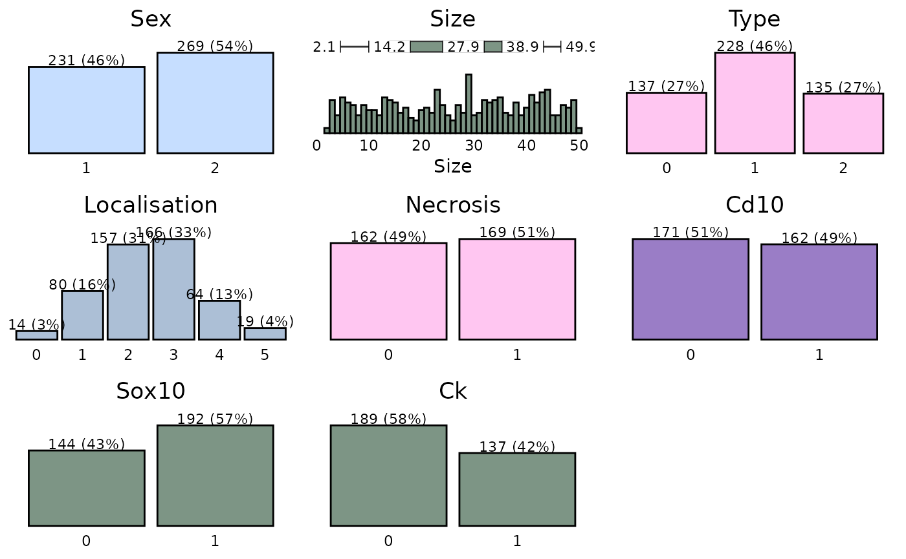
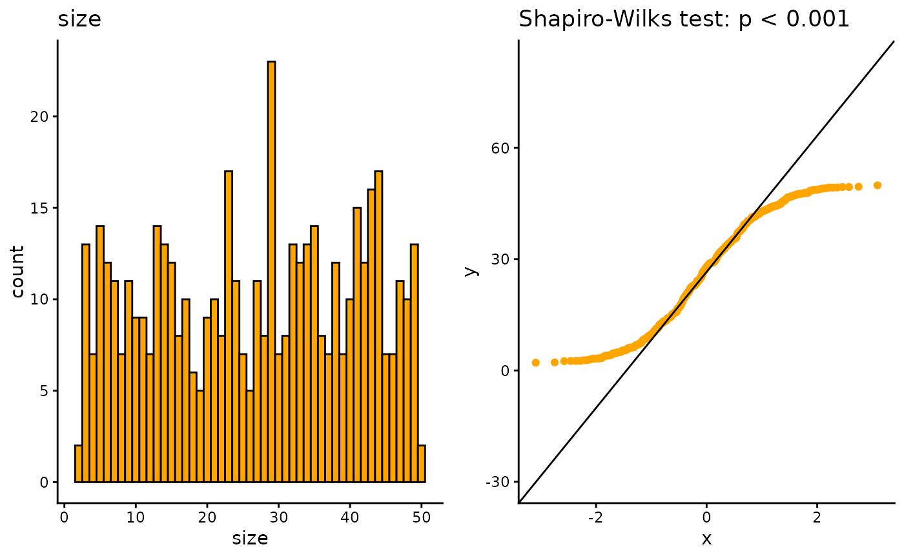

Introduction
This article is a thorough guide to data management in our. It mainly uses the dplyr package with additional cancR functions. The article is structured as chapters, where each chapter describes a specific task and should work as a library.
Loading the cancR package
First we load the cancR package. The package automatically loads many packages useful for data management
Data
The cancR package comes with ready-to-use datasets. In this article we use the redcap_df dataset which imitates a dataset exported directly from redcap.
Combining functions with the piping operator
It is advised to combine the functions described in this article into
one code chunk that runs all functions at once. The functions are
combined with the symbol %>% called a pipe. The shortcut
for a pipe is ctrl+shift+m.
Piping starts by specifying the dataset of which the analyses should be performed. After this all subsequent functions are separated by a pipe. In the following example we start in the dataset “redcap_df”, where we subsequently select the variables id, sex and birth, add a new variable called “new_variable” and lastly filter so that we subset the dataset to rows where type = 1. All these functions are combined into a piping structure and assigned to a new object named “new_data”
Data inspection
Before starting on data management, it is important to get an overview of the dataset.
The entire dataset can be expected by either clicking on the dataset
in the environment below or with the command View()
For a simpler inspection, head() shows only the first
six rows in the console
head(redcap_df)
#> id sex age birth followup date_of_surgery size type localisation
#> 1 1 1 79.1 20-09-1929 03-04-2023 2008-11-03 7.302734 1 3
#> 2 2 2 38.1 12-10-1953 18-12-2025 1991-11-13 20.043036 1 1
#> 3 3 1 60.6 11-05-1948 21-09-2025 2008-12-17 42.412003 1 2
#> 4 4 1 45.2 22-04-1949 11-02-2022 1994-07-17 27.853775 1 3
#> 5 5 2 39.5 18-01-1966 21-04-2022 2005-07-16 25.587530 2 1
#> 6 6 1 81.2 06-11-1925 17-07-2023 2007-02-02 49.415904 2 3
#> necrosis margins cd10 sox10 ck death_date recurrence_date metastasis_date
#> 1 NA 0 1 1 1 <NA> 2015-03-22 <NA>
#> 2 NA 0 0 0 NA <NA> <NA> <NA>
#> 3 0 1 NA NA 0 2017-09-02 <NA> <NA>
#> 4 1 0 0 0 0 2018-10-04 2011-12-31 <NA>
#> 5 NA 0 0 NA 0 <NA> <NA> <NA>
#> 6 1 1 1 1 0 <NA> <NA> <NA>All column names can be shown with names()
names(redcap_df)
#> [1] "id" "sex" "age" "birth"
#> [5] "followup" "date_of_surgery" "size" "type"
#> [9] "localisation" "necrosis" "margins" "cd10"
#> [13] "sox10" "ck" "death_date" "recurrence_date"
#> [17] "metastasis_date"It is also important to assess the structure of the data to check for correct formatting. E.g. are date-variables coded as dates, continouous variables as numeric etc.
str(redcap_df)
#> 'data.frame': 500 obs. of 17 variables:
#> $ id : int 1 2 3 4 5 6 7 8 9 10 ...
#> $ sex : num 1 2 1 1 2 1 1 1 2 2 ...
#> $ age : num 79.1 38.1 60.6 45.2 39.5 81.2 74.9 38.8 31.8 51.3 ...
#> $ birth : chr "20-09-1929" "12-10-1953" "11-05-1948" "22-04-1949" ...
#> $ followup : chr "03-04-2023" "18-12-2025" "21-09-2025" "11-02-2022" ...
#> $ date_of_surgery: chr "2008-11-03" "1991-11-13" "2008-12-17" "1994-07-17" ...
#> $ size : num 7.3 20 42.4 27.9 25.6 ...
#> $ type : int 1 1 1 1 2 2 0 0 0 2 ...
#> $ localisation : int 3 1 2 3 1 3 2 5 3 1 ...
#> $ necrosis : num NA NA 0 1 NA 1 0 1 NA NA ...
#> $ margins : chr "0" "0" "1" "0" ...
#> $ cd10 : num 1 0 NA 0 0 1 0 0 1 1 ...
#> $ sox10 : num 1 0 NA 0 NA 1 1 0 1 1 ...
#> $ ck : num 1 NA 0 0 0 0 0 NA 0 1 ...
#> $ death_date : chr NA NA "2017-09-02" "2018-10-04" ...
#> $ recurrence_date: chr "2015-03-22" NA NA "2011-12-31" ...
#> $ metastasis_date: chr NA NA NA NA ...Here we see that all date variables are coded as characters and not date. The conversion to date are described in the chapter: “Date formatting”
To get a graphical glimpse of the data we can use the summarisR() function:

And to exploit the number of missing values we use the missR() function
missR(redcap_df)
#> Nas detected in the following variables:
#>
#> variable NAs
#> 1 metastasis_date 339
#> 2 death_date 314
#> 3 recurrence_date 254
#> 4 necrosis 172
#> 5 cd10 162
#> 6 sox10 162
#> 7 ck 157We can also check if numerical variables are normally distributed with the distributR() function
distributR(redcap_df,
vars = size)
Data management
The next section goes through the most basic data management functions from the dplyr package.
Selection of variables
Variables/columns can be selected and removed with the select() function.
redcap_df %>%
select(id, sex, birth) %>%
head
#> id sex birth
#> 1 1 1 20-09-1929
#> 2 2 2 12-10-1953
#> 3 3 1 11-05-1948
#> 4 4 1 22-04-1949
#> 5 5 2 18-01-1966
#> 6 6 1 06-11-1925Variables are removed with a minus sign.
redcap_df %>%
select(-id, -birth) %>%
head
#> sex age followup date_of_surgery size type localisation necrosis
#> 1 1 79.1 03-04-2023 2008-11-03 7.302734 1 3 NA
#> 2 2 38.1 18-12-2025 1991-11-13 20.043036 1 1 NA
#> 3 1 60.6 21-09-2025 2008-12-17 42.412003 1 2 0
#> 4 1 45.2 11-02-2022 1994-07-17 27.853775 1 3 1
#> 5 2 39.5 21-04-2022 2005-07-16 25.587530 2 1 NA
#> 6 1 81.2 17-07-2023 2007-02-02 49.415904 2 3 1
#> margins cd10 sox10 ck death_date recurrence_date metastasis_date
#> 1 0 1 1 1 <NA> 2015-03-22 <NA>
#> 2 0 0 0 NA <NA> <NA> <NA>
#> 3 1 NA NA 0 2017-09-02 <NA> <NA>
#> 4 0 0 0 0 2018-10-04 2011-12-31 <NA>
#> 5 0 0 NA 0 <NA> <NA> <NA>
#> 6 1 1 1 0 <NA> <NA> <NA>It is also possible to choose variable based on text patterns, which is useful for variables with a common prefix/suffix such as _date
redcap_df %>%
select(contains("_date")) %>%
head
#> death_date recurrence_date metastasis_date
#> 1 <NA> 2015-03-22 <NA>
#> 2 <NA> <NA> <NA>
#> 3 2017-09-02 <NA> <NA>
#> 4 2018-10-04 2011-12-31 <NA>
#> 5 <NA> <NA> <NA>
#> 6 <NA> <NA> <NA>The text pattern can also be starts_with, ends_with and matches for an exact match.
If we need to select a large range of variables we call the first and last separated by a colon:
redcap_df %>%
select(sex:sox10) %>%
head
#> sex age birth followup date_of_surgery size type localisation
#> 1 1 79.1 20-09-1929 03-04-2023 2008-11-03 7.302734 1 3
#> 2 2 38.1 12-10-1953 18-12-2025 1991-11-13 20.043036 1 1
#> 3 1 60.6 11-05-1948 21-09-2025 2008-12-17 42.412003 1 2
#> 4 1 45.2 22-04-1949 11-02-2022 1994-07-17 27.853775 1 3
#> 5 2 39.5 18-01-1966 21-04-2022 2005-07-16 25.587530 2 1
#> 6 1 81.2 06-11-1925 17-07-2023 2007-02-02 49.415904 2 3
#> necrosis margins cd10 sox10
#> 1 NA 0 1 1
#> 2 NA 0 0 0
#> 3 0 1 NA NA
#> 4 1 0 0 0
#> 5 NA 0 0 NA
#> 6 1 1 1 1Renaming variables
Renaming of variable names can be done using rename(). The syntax is “new name” = “old name”
redcap_df %>%
rename(index = date_of_surgery,
cytokeratin = ck) %>%
head
#> id sex age birth followup index size type localisation
#> 1 1 1 79.1 20-09-1929 03-04-2023 2008-11-03 7.302734 1 3
#> 2 2 2 38.1 12-10-1953 18-12-2025 1991-11-13 20.043036 1 1
#> 3 3 1 60.6 11-05-1948 21-09-2025 2008-12-17 42.412003 1 2
#> 4 4 1 45.2 22-04-1949 11-02-2022 1994-07-17 27.853775 1 3
#> 5 5 2 39.5 18-01-1966 21-04-2022 2005-07-16 25.587530 2 1
#> 6 6 1 81.2 06-11-1925 17-07-2023 2007-02-02 49.415904 2 3
#> necrosis margins cd10 sox10 cytokeratin death_date recurrence_date
#> 1 NA 0 1 1 1 <NA> 2015-03-22
#> 2 NA 0 0 0 NA <NA> <NA>
#> 3 0 1 NA NA 0 2017-09-02 <NA>
#> 4 1 0 0 0 0 2018-10-04 2011-12-31
#> 5 NA 0 0 NA 0 <NA> <NA>
#> 6 1 1 1 1 0 <NA> <NA>
#> metastasis_date
#> 1 <NA>
#> 2 <NA>
#> 3 <NA>
#> 4 <NA>
#> 5 <NA>
#> 6 <NA>Create/modify variables
Variables can be created or modified with the mutate() function with the syntax: mutate(variable = condition). If the variable already exists in the dataset, it is modified automatically.
We now recode necrosis, so that 1 = yes and everything else is “no”.
redcap_df %>%
mutate(necrosis = ifelse(necrosis == 1, "yes", "no")) %>%
head
#> id sex age birth followup date_of_surgery size type localisation
#> 1 1 1 79.1 20-09-1929 03-04-2023 2008-11-03 7.302734 1 3
#> 2 2 2 38.1 12-10-1953 18-12-2025 1991-11-13 20.043036 1 1
#> 3 3 1 60.6 11-05-1948 21-09-2025 2008-12-17 42.412003 1 2
#> 4 4 1 45.2 22-04-1949 11-02-2022 1994-07-17 27.853775 1 3
#> 5 5 2 39.5 18-01-1966 21-04-2022 2005-07-16 25.587530 2 1
#> 6 6 1 81.2 06-11-1925 17-07-2023 2007-02-02 49.415904 2 3
#> necrosis margins cd10 sox10 ck death_date recurrence_date metastasis_date
#> 1 <NA> 0 1 1 1 <NA> 2015-03-22 <NA>
#> 2 <NA> 0 0 0 NA <NA> <NA> <NA>
#> 3 no 1 NA NA 0 2017-09-02 <NA> <NA>
#> 4 yes 0 0 0 0 2018-10-04 2011-12-31 <NA>
#> 5 <NA> 0 0 NA 0 <NA> <NA> <NA>
#> 6 yes 1 1 1 0 <NA> <NA> <NA>Notice that missing values in necrosis remain missing. If we want to
also assign these as “no” we change the == in the mutate
function to %in%. This will also imply that missing values
are converted to the “else” statement, here “no”.
redcap_df %>%
mutate(necrosis = ifelse(necrosis %in% 1, "yes", "no")) %>%
head
#> id sex age birth followup date_of_surgery size type localisation
#> 1 1 1 79.1 20-09-1929 03-04-2023 2008-11-03 7.302734 1 3
#> 2 2 2 38.1 12-10-1953 18-12-2025 1991-11-13 20.043036 1 1
#> 3 3 1 60.6 11-05-1948 21-09-2025 2008-12-17 42.412003 1 2
#> 4 4 1 45.2 22-04-1949 11-02-2022 1994-07-17 27.853775 1 3
#> 5 5 2 39.5 18-01-1966 21-04-2022 2005-07-16 25.587530 2 1
#> 6 6 1 81.2 06-11-1925 17-07-2023 2007-02-02 49.415904 2 3
#> necrosis margins cd10 sox10 ck death_date recurrence_date metastasis_date
#> 1 no 0 1 1 1 <NA> 2015-03-22 <NA>
#> 2 no 0 0 0 NA <NA> <NA> <NA>
#> 3 no 1 NA NA 0 2017-09-02 <NA> <NA>
#> 4 yes 0 0 0 0 2018-10-04 2011-12-31 <NA>
#> 5 no 0 0 NA 0 <NA> <NA> <NA>
#> 6 yes 1 1 1 0 <NA> <NA> <NA>If we want more explicit control with the recoding or we have more than one condition, we use case_when
redcap_df %>%
mutate(necrosis = case_when(necrosis == 1 ~ "yes",
necrosis == 0 ~ "no")) %>%
head
#> id sex age birth followup date_of_surgery size type localisation
#> 1 1 1 79.1 20-09-1929 03-04-2023 2008-11-03 7.302734 1 3
#> 2 2 2 38.1 12-10-1953 18-12-2025 1991-11-13 20.043036 1 1
#> 3 3 1 60.6 11-05-1948 21-09-2025 2008-12-17 42.412003 1 2
#> 4 4 1 45.2 22-04-1949 11-02-2022 1994-07-17 27.853775 1 3
#> 5 5 2 39.5 18-01-1966 21-04-2022 2005-07-16 25.587530 2 1
#> 6 6 1 81.2 06-11-1925 17-07-2023 2007-02-02 49.415904 2 3
#> necrosis margins cd10 sox10 ck death_date recurrence_date metastasis_date
#> 1 <NA> 0 1 1 1 <NA> 2015-03-22 <NA>
#> 2 <NA> 0 0 0 NA <NA> <NA> <NA>
#> 3 no 1 NA NA 0 2017-09-02 <NA> <NA>
#> 4 yes 0 0 0 0 2018-10-04 2011-12-31 <NA>
#> 5 <NA> 0 0 NA 0 <NA> <NA> <NA>
#> 6 yes 1 1 1 0 <NA> <NA> <NA>Now we have preserved the missing values. We can also control what to do with values that does not satisfy any of the criteria
redcap_df %>%
mutate(necrosis = case_when(necrosis %in% 1 ~ "yes",
necrosis %in% 0 ~ "no",
T ~ "missing")) %>%
head
#> id sex age birth followup date_of_surgery size type localisation
#> 1 1 1 79.1 20-09-1929 03-04-2023 2008-11-03 7.302734 1 3
#> 2 2 2 38.1 12-10-1953 18-12-2025 1991-11-13 20.043036 1 1
#> 3 3 1 60.6 11-05-1948 21-09-2025 2008-12-17 42.412003 1 2
#> 4 4 1 45.2 22-04-1949 11-02-2022 1994-07-17 27.853775 1 3
#> 5 5 2 39.5 18-01-1966 21-04-2022 2005-07-16 25.587530 2 1
#> 6 6 1 81.2 06-11-1925 17-07-2023 2007-02-02 49.415904 2 3
#> necrosis margins cd10 sox10 ck death_date recurrence_date metastasis_date
#> 1 missing 0 1 1 1 <NA> 2015-03-22 <NA>
#> 2 missing 0 0 0 NA <NA> <NA> <NA>
#> 3 no 1 NA NA 0 2017-09-02 <NA> <NA>
#> 4 yes 0 0 0 0 2018-10-04 2011-12-31 <NA>
#> 5 missing 0 0 NA 0 <NA> <NA> <NA>
#> 6 yes 1 1 1 0 <NA> <NA> <NA>Collecting multiple mutate functions
Multiple mutate functions can be collected in one call
redcap_df %>%
mutate(new_variable = "new",
sex = ifelse(sex == 1, "f", "m"),
size = case_when(size > 40 ~ "large",
size < 10 ~ "small",
T ~ "intermediate")) %>%
head
#> id sex age birth followup date_of_surgery size type
#> 1 1 f 79.1 20-09-1929 03-04-2023 2008-11-03 small 1
#> 2 2 m 38.1 12-10-1953 18-12-2025 1991-11-13 intermediate 1
#> 3 3 f 60.6 11-05-1948 21-09-2025 2008-12-17 large 1
#> 4 4 f 45.2 22-04-1949 11-02-2022 1994-07-17 intermediate 1
#> 5 5 m 39.5 18-01-1966 21-04-2022 2005-07-16 intermediate 2
#> 6 6 f 81.2 06-11-1925 17-07-2023 2007-02-02 large 2
#> localisation necrosis margins cd10 sox10 ck death_date recurrence_date
#> 1 3 NA 0 1 1 1 <NA> 2015-03-22
#> 2 1 NA 0 0 0 NA <NA> <NA>
#> 3 2 0 1 NA NA 0 2017-09-02 <NA>
#> 4 3 1 0 0 0 0 2018-10-04 2011-12-31
#> 5 1 NA 0 0 NA 0 <NA> <NA>
#> 6 3 1 1 1 1 0 <NA> <NA>
#> metastasis_date new_variable
#> 1 <NA> new
#> 2 <NA> new
#> 3 <NA> new
#> 4 <NA> new
#> 5 <NA> new
#> 6 <NA> newMutating multiple variables simultaneously
Multiple variables can be modified with across() within
mutate. The syntax is:
`mutate(across(c(variable1, variable2), ~ function))
Here we convert the variables cd10, sox10 and ck to characters
redcap_df %>%
select(cd10, sox10, ck) %>%
mutate(across(c(cd10, sox10, ck), ~ as.character(.))) %>%
head
#> cd10 sox10 ck
#> 1 1 1 1
#> 2 0 0 <NA>
#> 3 <NA> <NA> 0
#> 4 0 0 0
#> 5 0 <NA> 0
#> 6 1 1 0The . inside the as.character(.) refers to
all the variables inside across().
Recoding of variables
Recoding of variables can be done with the recodR() function in the cancR package. The syntax here is a list of lists, so that list(variable = list(new name = old name))
redcap_df %>%
recodR(list("sex" =
list("female" = 1,
"male" = 2),
"type" =
list("benign" = 0,
"in_situ" = 1,
"malignant" = 2),
"localisation" =
list("head" = 1,
"neck" = 2,
"trunk" = 3,
"upper_extremity" = 4,
"lower_extremity" = 5))) %>%
head
#> id sex age birth followup date_of_surgery size type
#> 1 1 female 79.1 20-09-1929 03-04-2023 2008-11-03 7.302734 in_situ
#> 2 2 male 38.1 12-10-1953 18-12-2025 1991-11-13 20.043036 in_situ
#> 3 3 female 60.6 11-05-1948 21-09-2025 2008-12-17 42.412003 in_situ
#> 4 4 female 45.2 22-04-1949 11-02-2022 1994-07-17 27.853775 in_situ
#> 5 5 male 39.5 18-01-1966 21-04-2022 2005-07-16 25.587530 malignant
#> 6 6 female 81.2 06-11-1925 17-07-2023 2007-02-02 49.415904 malignant
#> localisation necrosis margins cd10 sox10 ck death_date recurrence_date
#> 1 trunk NA 0 1 1 1 <NA> 2015-03-22
#> 2 head NA 0 0 0 NA <NA> <NA>
#> 3 neck 0 1 NA NA 0 2017-09-02 <NA>
#> 4 trunk 1 0 0 0 0 2018-10-04 2011-12-31
#> 5 head NA 0 0 NA 0 <NA> <NA>
#> 6 trunk 1 1 1 1 0 <NA> <NA>
#> metastasis_date
#> 1 <NA>
#> 2 <NA>
#> 3 <NA>
#> 4 <NA>
#> 5 <NA>
#> 6 <NA>If the recoding should be more advanced and should be based on one or more conditions, we can use ifelse() or case_when() (see examples under “Create/modify variables”).
Date formatting
Dates are often formatted as character strings and need to be converted to correct date format. This can easily be done with the datR() function:
redcap_df %>%
datR(c(contains("date"), birth, followup)) %>%
head
#> id sex age birth followup date_of_surgery size type
#> <int> <num> <num> <Date> <Date> <Date> <num> <int>
#> 1: 1 1 79.1 1929-09-20 2023-04-03 2008-11-03 7.302734 1
#> 2: 2 2 38.1 1953-10-12 2025-12-18 1991-11-13 20.043036 1
#> 3: 3 1 60.6 1948-05-11 2025-09-21 2008-12-17 42.412003 1
#> 4: 4 1 45.2 1949-04-22 2022-02-11 1994-07-17 27.853775 1
#> 5: 5 2 39.5 1966-01-18 2022-04-21 2005-07-16 25.587530 2
#> 6: 6 1 81.2 1925-11-06 2023-07-17 2007-02-02 49.415904 2
#> localisation necrosis margins cd10 sox10 ck death_date recurrence_date
#> <int> <num> <char> <num> <num> <num> <Date> <Date>
#> 1: 3 NA 0 1 1 1 <NA> 2015-03-22
#> 2: 1 NA 0 0 0 NA <NA> <NA>
#> 3: 2 0 1 NA NA 0 2017-09-02 <NA>
#> 4: 3 1 0 0 0 0 2018-10-04 2011-12-31
#> 5: 1 NA 0 0 NA 0 <NA> <NA>
#> 6: 3 1 1 1 1 0 <NA> <NA>
#> metastasis_date
#> <Date>
#> 1: <NA>
#> 2: <NA>
#> 3: <NA>
#> 4: <NA>
#> 5: <NA>
#> 6: <NA>Categorization of continuous variables
The optimal method for splitting continuous variables depends on the number of splits: - One splits: ifelse() - More than one split: case_when() - Splits based on a sequence or quantiles: cutR()
One split with ifelse()
redcap_df %>%
mutate(size_bin = ifelse(size > 20, "large", "small")) %>%
head
#> id sex age birth followup date_of_surgery size type
#> <int> <num> <num> <char> <char> <char> <num> <int>
#> 1: 1 1 79.1 20-09-1929 03-04-2023 2008-11-03 7.302734 1
#> 2: 2 2 38.1 12-10-1953 18-12-2025 1991-11-13 20.043036 1
#> 3: 3 1 60.6 11-05-1948 21-09-2025 2008-12-17 42.412003 1
#> 4: 4 1 45.2 22-04-1949 11-02-2022 1994-07-17 27.853775 1
#> 5: 5 2 39.5 18-01-1966 21-04-2022 2005-07-16 25.587530 2
#> 6: 6 1 81.2 06-11-1925 17-07-2023 2007-02-02 49.415904 2
#> localisation necrosis margins cd10 sox10 ck death_date recurrence_date
#> <int> <num> <char> <num> <num> <num> <char> <char>
#> 1: 3 NA 0 1 1 1 <NA> 2015-03-22
#> 2: 1 NA 0 0 0 NA <NA> <NA>
#> 3: 2 0 1 NA NA 0 2017-09-02 <NA>
#> 4: 3 1 0 0 0 0 2018-10-04 2011-12-31
#> 5: 1 NA 0 0 NA 0 <NA> <NA>
#> 6: 3 1 1 1 1 0 <NA> <NA>
#> metastasis_date size_bin
#> <char> <char>
#> 1: <NA> small
#> 2: <NA> large
#> 3: <NA> large
#> 4: <NA> large
#> 5: <NA> large
#> 6: <NA> largeMore splits with case_when()
redcap_df %>%
mutate(size_bin = case_when(size > 40 ~ "large",
size < 10 ~ "small",
T ~ "intermediate")) %>%
head
#> id sex age birth followup date_of_surgery size type
#> <int> <num> <num> <char> <char> <char> <num> <int>
#> 1: 1 1 79.1 20-09-1929 03-04-2023 2008-11-03 7.302734 1
#> 2: 2 2 38.1 12-10-1953 18-12-2025 1991-11-13 20.043036 1
#> 3: 3 1 60.6 11-05-1948 21-09-2025 2008-12-17 42.412003 1
#> 4: 4 1 45.2 22-04-1949 11-02-2022 1994-07-17 27.853775 1
#> 5: 5 2 39.5 18-01-1966 21-04-2022 2005-07-16 25.587530 2
#> 6: 6 1 81.2 06-11-1925 17-07-2023 2007-02-02 49.415904 2
#> localisation necrosis margins cd10 sox10 ck death_date recurrence_date
#> <int> <num> <char> <num> <num> <num> <char> <char>
#> 1: 3 NA 0 1 1 1 <NA> 2015-03-22
#> 2: 1 NA 0 0 0 NA <NA> <NA>
#> 3: 2 0 1 NA NA 0 2017-09-02 <NA>
#> 4: 3 1 0 0 0 0 2018-10-04 2011-12-31
#> 5: 1 NA 0 0 NA 0 <NA> <NA>
#> 6: 3 1 1 1 1 0 <NA> <NA>
#> metastasis_date size_bin
#> <char> <char>
#> 1: <NA> small
#> 2: <NA> intermediate
#> 3: <NA> large
#> 4: <NA> intermediate
#> 5: <NA> intermediate
#> 6: <NA> largeSplits based on a sequence can be done with the cutR() function:
redcap_df %>%
cutR(size,
seq(0,50,10)) %>%
head
#> id sex age birth followup date_of_surgery size type localisation
#> 1 1 1 79.1 20-09-1929 03-04-2023 2008-11-03 0-10 1 3
#> 2 2 2 38.1 12-10-1953 18-12-2025 1991-11-13 20-30 1 1
#> 3 3 1 60.6 11-05-1948 21-09-2025 2008-12-17 40-50 1 2
#> 4 4 1 45.2 22-04-1949 11-02-2022 1994-07-17 20-30 1 3
#> 5 5 2 39.5 18-01-1966 21-04-2022 2005-07-16 20-30 2 1
#> 6 6 1 81.2 06-11-1925 17-07-2023 2007-02-02 40-50 2 3
#> necrosis margins cd10 sox10 ck death_date recurrence_date metastasis_date
#> 1 NA 0 1 1 1 <NA> 2015-03-22 <NA>
#> 2 NA 0 0 0 NA <NA> <NA> <NA>
#> 3 0 1 NA NA 0 2017-09-02 <NA> <NA>
#> 4 1 0 0 0 0 2018-10-04 2011-12-31 <NA>
#> 5 NA 0 0 NA 0 <NA> <NA> <NA>
#> 6 1 1 1 1 0 <NA> <NA> <NA>Multiple splits can also be performed with cutR() with name assigning
redcap_df %>%
cutR(vars = c(age, size),
seqlist = list("age" = seq(0,100,10),
"size" = list("quantile", c(0,0.25,0.5,0.75,1))),
name.list = list("age" = "age_group",
"size" = "size_bin")) %>%
head
#> id sex age birth followup date_of_surgery size type localisation
#> 1 1 1 79.1 20-09-1929 03-04-2023 2008-11-03 7.302734 1 3
#> 2 2 2 38.1 12-10-1953 18-12-2025 1991-11-13 20.043036 1 1
#> 3 3 1 60.6 11-05-1948 21-09-2025 2008-12-17 42.412003 1 2
#> 4 4 1 45.2 22-04-1949 11-02-2022 1994-07-17 27.853775 1 3
#> 5 5 2 39.5 18-01-1966 21-04-2022 2005-07-16 25.587530 2 1
#> 6 6 1 81.2 06-11-1925 17-07-2023 2007-02-02 49.415904 2 3
#> necrosis margins cd10 sox10 ck death_date recurrence_date metastasis_date
#> 1 NA 0 1 1 1 <NA> 2015-03-22 <NA>
#> 2 NA 0 0 0 NA <NA> <NA> <NA>
#> 3 0 1 NA NA 0 2017-09-02 <NA> <NA>
#> 4 1 0 0 0 0 2018-10-04 2011-12-31 <NA>
#> 5 NA 0 0 NA 0 <NA> <NA> <NA>
#> 6 1 1 1 1 0 <NA> <NA> <NA>
#> age_group size_bin
#> 1 70-80 2-14
#> 2 30-40 14-24
#> 3 60-70 38-50
#> 4 40-50 24-38
#> 5 40-50 24-38
#> 6 80-90 38-50The new variables can also be given the same name pattern if the input variables are similar such as dates
redcap_df %>%
#Conversion into date format
datR(contains("date")) %>%
cutR(vars = c(recurrence_date, metastasis_date),
seqlist = list("seq", c(1900,2030,10)),
name.pattern = "_bin") %>%
head
#> id sex age birth followup date_of_surgery size type localisation
#> 1 1 1 79.1 20-09-1929 03-04-2023 2008-11-03 7.302734 1 3
#> 2 2 2 38.1 12-10-1953 18-12-2025 1991-11-13 20.043036 1 1
#> 3 3 1 60.6 11-05-1948 21-09-2025 2008-12-17 42.412003 1 2
#> 4 4 1 45.2 22-04-1949 11-02-2022 1994-07-17 27.853775 1 3
#> 5 5 2 39.5 18-01-1966 21-04-2022 2005-07-16 25.587530 2 1
#> 6 6 1 81.2 06-11-1925 17-07-2023 2007-02-02 49.415904 2 3
#> necrosis margins cd10 sox10 ck death_date recurrence_date metastasis_date
#> 1 NA 0 1 1 1 <NA> 2015-03-22 <NA>
#> 2 NA 0 0 0 NA <NA> <NA> <NA>
#> 3 0 1 NA NA 0 2017-09-02 <NA> <NA>
#> 4 1 0 0 0 0 2018-10-04 2011-12-31 <NA>
#> 5 NA 0 0 NA 0 <NA> <NA> <NA>
#> 6 1 1 1 1 0 <NA> <NA> <NA>
#> recurrence_date_bin metastasis_date_bin
#> 1 2010-2020 <NA>
#> 2 <NA> <NA>
#> 3 <NA> <NA>
#> 4 2010-2020 <NA>
#> 5 <NA> <NA>
#> 6 <NA> <NA>Conversion to factor
In many cases it is of interest to specify a categorical variable with certain levels or reference groups. This is done with factR(). If nothing else is specified, factR() converts a character string into a factor, with the level with most observations as reference. The function str() is used to show the formatting of the type variable has changed to factor.
redcap_df %>%
factR(type) %>%
str
#> 'data.frame': 500 obs. of 17 variables:
#> $ id : int 1 2 3 4 5 6 7 8 9 10 ...
#> $ sex : num 1 2 1 1 2 1 1 1 2 2 ...
#> $ age : num 79.1 38.1 60.6 45.2 39.5 81.2 74.9 38.8 31.8 51.3 ...
#> $ birth : chr "20-09-1929" "12-10-1953" "11-05-1948" "22-04-1949" ...
#> $ followup : chr "03-04-2023" "18-12-2025" "21-09-2025" "11-02-2022" ...
#> $ date_of_surgery: chr "2008-11-03" "1991-11-13" "2008-12-17" "1994-07-17" ...
#> $ size : num 7.3 20 42.4 27.9 25.6 ...
#> $ type : Factor w/ 3 levels "1","2","0": 1 1 1 1 2 2 3 3 3 2 ...
#> $ localisation : int 3 1 2 3 1 3 2 5 3 1 ...
#> $ necrosis : num NA NA 0 1 NA 1 0 1 NA NA ...
#> $ margins : chr "0" "0" "1" "0" ...
#> $ cd10 : num 1 0 NA 0 0 1 0 0 1 1 ...
#> $ sox10 : num 1 0 NA 0 NA 1 1 0 1 1 ...
#> $ ck : num 1 NA 0 0 0 0 0 NA 0 1 ...
#> $ death_date : chr NA NA "2017-09-02" "2018-10-04" ...
#> $ recurrence_date: chr "2015-03-22" NA NA "2011-12-31" ...
#> $ metastasis_date: chr NA NA NA NA ...The reference group is specified using the reference argument
redcap_df %>%
factR(type,
reference = "0") %>%
str
#> 'data.frame': 500 obs. of 17 variables:
#> $ id : int 1 2 3 4 5 6 7 8 9 10 ...
#> $ sex : num 1 2 1 1 2 1 1 1 2 2 ...
#> $ age : num 79.1 38.1 60.6 45.2 39.5 81.2 74.9 38.8 31.8 51.3 ...
#> $ birth : chr "20-09-1929" "12-10-1953" "11-05-1948" "22-04-1949" ...
#> $ followup : chr "03-04-2023" "18-12-2025" "21-09-2025" "11-02-2022" ...
#> $ date_of_surgery: chr "2008-11-03" "1991-11-13" "2008-12-17" "1994-07-17" ...
#> $ size : num 7.3 20 42.4 27.9 25.6 ...
#> $ type : Factor w/ 3 levels "0","1","2": 2 2 2 2 3 3 1 1 1 3 ...
#> $ localisation : int 3 1 2 3 1 3 2 5 3 1 ...
#> $ necrosis : num NA NA 0 1 NA 1 0 1 NA NA ...
#> $ margins : chr "0" "0" "1" "0" ...
#> $ cd10 : num 1 0 NA 0 0 1 0 0 1 1 ...
#> $ sox10 : num 1 0 NA 0 NA 1 1 0 1 1 ...
#> $ ck : num 1 NA 0 0 0 0 0 NA 0 1 ...
#> $ death_date : chr NA NA "2017-09-02" "2018-10-04" ...
#> $ recurrence_date: chr "2015-03-22" NA NA "2011-12-31" ...
#> $ metastasis_date: chr NA NA NA NA ...Levels can be manually assigned
redcap_df %>%
factR(type,
levels = c("2","1","0")) %>%
str
#> 'data.frame': 500 obs. of 17 variables:
#> $ id : int 1 2 3 4 5 6 7 8 9 10 ...
#> $ sex : num 1 2 1 1 2 1 1 1 2 2 ...
#> $ age : num 79.1 38.1 60.6 45.2 39.5 81.2 74.9 38.8 31.8 51.3 ...
#> $ birth : chr "20-09-1929" "12-10-1953" "11-05-1948" "22-04-1949" ...
#> $ followup : chr "03-04-2023" "18-12-2025" "21-09-2025" "11-02-2022" ...
#> $ date_of_surgery: chr "2008-11-03" "1991-11-13" "2008-12-17" "1994-07-17" ...
#> $ size : num 7.3 20 42.4 27.9 25.6 ...
#> $ type : Factor w/ 3 levels "2","1","0": 2 2 2 2 1 1 3 3 3 1 ...
#> $ localisation : int 3 1 2 3 1 3 2 5 3 1 ...
#> $ necrosis : num NA NA 0 1 NA 1 0 1 NA NA ...
#> $ margins : chr "0" "0" "1" "0" ...
#> $ cd10 : num 1 0 NA 0 0 1 0 0 1 1 ...
#> $ sox10 : num 1 0 NA 0 NA 1 1 0 1 1 ...
#> $ ck : num 1 NA 0 0 0 0 0 NA 0 1 ...
#> $ death_date : chr NA NA "2017-09-02" "2018-10-04" ...
#> $ recurrence_date: chr "2015-03-22" NA NA "2011-12-31" ...
#> $ metastasis_date: chr NA NA NA NA ...New labels can also be assigned and automatically specify levels simultaneously
redcap_df %>%
factR(type,
labels = list("type" = list("benign" = "0",
"intermediate" = "1",
"malignant" = "2")),
lab_to_lev = T) %>%
str
#> 'data.frame': 500 obs. of 17 variables:
#> $ id : int 1 2 3 4 5 6 7 8 9 10 ...
#> $ sex : num 1 2 1 1 2 1 1 1 2 2 ...
#> $ age : num 79.1 38.1 60.6 45.2 39.5 81.2 74.9 38.8 31.8 51.3 ...
#> $ birth : chr "20-09-1929" "12-10-1953" "11-05-1948" "22-04-1949" ...
#> $ followup : chr "03-04-2023" "18-12-2025" "21-09-2025" "11-02-2022" ...
#> $ date_of_surgery: chr "2008-11-03" "1991-11-13" "2008-12-17" "1994-07-17" ...
#> $ size : num 7.3 20 42.4 27.9 25.6 ...
#> $ type : Factor w/ 3 levels "benign","intermediate",..: 2 2 2 2 3 3 1 1 1 3 ...
#> $ localisation : int 3 1 2 3 1 3 2 5 3 1 ...
#> $ necrosis : num NA NA 0 1 NA 1 0 1 NA NA ...
#> $ margins : chr "0" "0" "1" "0" ...
#> $ cd10 : num 1 0 NA 0 0 1 0 0 1 1 ...
#> $ sox10 : num 1 0 NA 0 NA 1 1 0 1 1 ...
#> $ ck : num 1 NA 0 0 0 0 0 NA 0 1 ...
#> $ death_date : chr NA NA "2017-09-02" "2018-10-04" ...
#> $ recurrence_date: chr "2015-03-22" NA NA "2011-12-31" ...
#> $ metastasis_date: chr NA NA NA NA ...Lastly, all the arguments can be specified for multiple variables at once
redcap_df %>%
factR(vars = c(type, sex),
reference = list("sex" = "2"),
levels = list("type" = c("0", "1", "2")),
labels = list("sex" = c("f" = "1",
"m" = "2"),
"type" = c("benign" = "0",
"intermediate" = "1",
"malignant" = "2"))) %>%
str
#> 'data.frame': 500 obs. of 17 variables:
#> $ id : int 1 2 3 4 5 6 7 8 9 10 ...
#> $ sex : Factor w/ 2 levels "m","f": 2 1 2 2 1 2 2 2 1 1 ...
#> $ age : num 79.1 38.1 60.6 45.2 39.5 81.2 74.9 38.8 31.8 51.3 ...
#> $ birth : chr "20-09-1929" "12-10-1953" "11-05-1948" "22-04-1949" ...
#> $ followup : chr "03-04-2023" "18-12-2025" "21-09-2025" "11-02-2022" ...
#> $ date_of_surgery: chr "2008-11-03" "1991-11-13" "2008-12-17" "1994-07-17" ...
#> $ size : num 7.3 20 42.4 27.9 25.6 ...
#> $ type : Factor w/ 3 levels "benign","intermediate",..: 2 2 2 2 3 3 1 1 1 3 ...
#> $ localisation : int 3 1 2 3 1 3 2 5 3 1 ...
#> $ necrosis : num NA NA 0 1 NA 1 0 1 NA NA ...
#> $ margins : chr "0" "0" "1" "0" ...
#> $ cd10 : num 1 0 NA 0 0 1 0 0 1 1 ...
#> $ sox10 : num 1 0 NA 0 NA 1 1 0 1 1 ...
#> $ ck : num 1 NA 0 0 0 0 0 NA 0 1 ...
#> $ death_date : chr NA NA "2017-09-02" "2018-10-04" ...
#> $ recurrence_date: chr "2015-03-22" NA NA "2011-12-31" ...
#> $ metastasis_date: chr NA NA NA NA ...Subset rows (filters)
If we want to keep only certain rows we use filter(). Here we limit the dataset to patients without necrosis (necrosis = 0)
redcap_df %>%
filter(necrosis == 0) %>%
head
#> id sex age birth followup date_of_surgery size type
#> <int> <num> <num> <char> <char> <char> <num> <int>
#> 1: 3 1 60.6 11-05-1948 21-09-2025 2008-12-17 42.412003 1
#> 2: 7 1 74.9 16-06-1921 15-11-2023 1996-05-23 41.732124 0
#> 3: 13 1 12.2 01-03-1980 01-06-2022 1992-05-20 29.106387 2
#> 4: 16 2 33.5 30-06-1957 22-03-2025 1991-01-11 17.586347 0
#> 5: 18 2 22.8 13-08-1974 31-10-2022 1997-05-31 13.495825 1
#> 6: 22 1 14.2 14-05-1980 06-09-2024 1994-07-21 2.055776 1
#> localisation necrosis margins cd10 sox10 ck death_date recurrence_date
#> <int> <num> <char> <num> <num> <num> <char> <char>
#> 1: 2 0 1 NA NA 0 2017-09-02 <NA>
#> 2: 2 0 1 0 1 0 <NA> 2012-08-30
#> 3: 3 0 1 0 1 0 2020-03-28 2014-09-16
#> 4: 4 0 0 0 0 NA <NA> <NA>
#> 5: 3 0 1 1 0 1 <NA> <NA>
#> 6: 4 0 1 NA NA NA <NA> 2012-05-04
#> metastasis_date
#> <char>
#> 1: <NA>
#> 2: <NA>
#> 3: <NA>
#> 4: 2012-04-11
#> 5: <NA>
#> 6: 2014-03-30In case of multiple conditions we use the %in% operator,
as this specified that the variables has one of the following values
redcap_df %>%
filter(localisation %in% c(1,2,3)) %>%
head
#> id sex age birth followup date_of_surgery size type
#> <int> <num> <num> <char> <char> <char> <num> <int>
#> 1: 1 1 79.1 20-09-1929 03-04-2023 2008-11-03 7.302734 1
#> 2: 2 2 38.1 12-10-1953 18-12-2025 1991-11-13 20.043036 1
#> 3: 3 1 60.6 11-05-1948 21-09-2025 2008-12-17 42.412003 1
#> 4: 4 1 45.2 22-04-1949 11-02-2022 1994-07-17 27.853775 1
#> 5: 5 2 39.5 18-01-1966 21-04-2022 2005-07-16 25.587530 2
#> 6: 6 1 81.2 06-11-1925 17-07-2023 2007-02-02 49.415904 2
#> localisation necrosis margins cd10 sox10 ck death_date recurrence_date
#> <int> <num> <char> <num> <num> <num> <char> <char>
#> 1: 3 NA 0 1 1 1 <NA> 2015-03-22
#> 2: 1 NA 0 0 0 NA <NA> <NA>
#> 3: 2 0 1 NA NA 0 2017-09-02 <NA>
#> 4: 3 1 0 0 0 0 2018-10-04 2011-12-31
#> 5: 1 NA 0 0 NA 0 <NA> <NA>
#> 6: 3 1 1 1 1 0 <NA> <NA>
#> metastasis_date
#> <char>
#> 1: <NA>
#> 2: <NA>
#> 3: <NA>
#> 4: <NA>
#> 5: <NA>
#> 6: <NA>For numerical variables we use <, >, ==, >= and <=
redcap_df %>%
filter(size > 20) %>%
head
#> id sex age birth followup date_of_surgery size type
#> <int> <num> <num> <char> <char> <char> <num> <int>
#> 1: 2 2 38.1 12-10-1953 18-12-2025 1991-11-13 20.04304 1
#> 2: 3 1 60.6 11-05-1948 21-09-2025 2008-12-17 42.41200 1
#> 3: 4 1 45.2 22-04-1949 11-02-2022 1994-07-17 27.85378 1
#> 4: 5 2 39.5 18-01-1966 21-04-2022 2005-07-16 25.58753 2
#> 5: 6 1 81.2 06-11-1925 17-07-2023 2007-02-02 49.41590 2
#> 6: 7 1 74.9 16-06-1921 15-11-2023 1996-05-23 41.73212 0
#> localisation necrosis margins cd10 sox10 ck death_date recurrence_date
#> <int> <num> <char> <num> <num> <num> <char> <char>
#> 1: 1 NA 0 0 0 NA <NA> <NA>
#> 2: 2 0 1 NA NA 0 2017-09-02 <NA>
#> 3: 3 1 0 0 0 0 2018-10-04 2011-12-31
#> 4: 1 NA 0 0 NA 0 <NA> <NA>
#> 5: 3 1 1 1 1 0 <NA> <NA>
#> 6: 2 0 1 0 1 0 <NA> 2012-08-30
#> metastasis_date
#> <char>
#> 1: <NA>
#> 2: <NA>
#> 3: <NA>
#> 4: <NA>
#> 5: <NA>
#> 6: <NA>We can also use between() to specify an interval
redcap_df %>%
filter(between(size, 10,20)) %>%
head
#> id sex age birth followup date_of_surgery size type
#> <int> <num> <num> <char> <char> <char> <num> <int>
#> 1: 9 2 31.8 11-11-1958 11-03-2025 1990-08-29 10.72685 0
#> 2: 14 1 61.5 28-09-1944 08-06-2021 2006-03-15 14.73268 0
#> 3: 16 2 33.5 30-06-1957 22-03-2025 1991-01-11 17.58635 0
#> 4: 18 2 22.8 13-08-1974 31-10-2022 1997-05-31 13.49582 1
#> 5: 23 1 35.3 26-10-1969 31-07-2022 2005-03-02 14.91346 2
#> 6: 27 2 52.2 27-02-1951 07-05-2022 2003-04-25 17.22927 1
#> localisation necrosis margins cd10 sox10 ck death_date recurrence_date
#> <int> <num> <char> <num> <num> <num> <char> <char>
#> 1: 3 NA 1 1 1 0 <NA> 2014-02-16
#> 2: 0 1 0 0 0 NA <NA> 2011-05-23
#> 3: 4 0 0 0 0 NA <NA> <NA>
#> 4: 3 0 1 1 0 1 <NA> <NA>
#> 5: 2 NA 0 NA 0 NA <NA> 2010-06-12
#> 6: 3 NA 0 1 NA 1 2017-06-25 <NA>
#> metastasis_date
#> <char>
#> 1: <NA>
#> 2: <NA>
#> 3: 2012-04-11
#> 4: <NA>
#> 5: 2014-10-10
#> 6: 2013-05-21Multiple conditions can be combined using so-called “boolean” operators whic are and/or/not etc. Here we keep rows where necrosis = 1 AND localisation is 1, 2 or 3 OR size is larger than 10. Here necrosis needs to be 1, but either of the conditions for localisation or size can be satisified.
redcap_df %>%
filter(necrosis == 1 & (localisation %in% c(1,2,3) | size > 10)) %>%
head
#> id sex age birth followup date_of_surgery size type
#> <int> <num> <num> <char> <char> <char> <num> <int>
#> 1: 4 1 45.2 22-04-1949 11-02-2022 1994-07-17 27.853775 1
#> 2: 6 1 81.2 06-11-1925 17-07-2023 2007-02-02 49.415904 2
#> 3: 14 1 61.5 28-09-1944 08-06-2021 2006-03-15 14.732677 0
#> 4: 15 1 14.1 25-01-1979 11-10-2025 1993-03-09 41.706223 0
#> 5: 20 1 58.2 05-02-1939 01-10-2024 1997-04-26 3.757738 1
#> 6: 21 1 83.0 09-04-1925 07-02-2025 2008-04-16 43.065297 1
#> localisation necrosis margins cd10 sox10 ck death_date recurrence_date
#> <int> <num> <char> <num> <num> <num> <char> <char>
#> 1: 3 1 0 0 0 0 2018-10-04 2011-12-31
#> 2: 3 1 1 1 1 0 <NA> <NA>
#> 3: 0 1 0 0 0 NA <NA> 2011-05-23
#> 4: 2 1 0 0 NA NA 2020-09-30 2014-01-06
#> 5: 3 1 1 NA 1 NA <NA> 2010-08-13
#> 6: 4 1 1 0 0 1 <NA> <NA>
#> metastasis_date
#> <char>
#> 1: <NA>
#> 2: <NA>
#> 3: <NA>
#> 4: <NA>
#> 5: <NA>
#> 6: 2012-04-13Arranging/sorting data
Sorting is done with the arrange(). If the variable needs to be in descending order it is prefixed by a desc()
redcap_df %>%
arrange(size) %>%
head()
#> id sex age birth followup date_of_surgery size type
#> <int> <num> <num> <char> <char> <char> <num> <int>
#> 1: 22 1 14.2 14-05-1980 06-09-2024 1994-07-21 2.055776 1
#> 2: 405 1 41.9 25-05-1953 13-05-2023 1995-04-17 2.060206 0
#> 3: 305 1 66.3 25-04-1942 14-09-2025 2008-08-08 2.177728 1
#> 4: 178 2 48.3 05-10-1960 20-06-2025 2009-01-15 2.179957 2
#> 5: 11 1 61.8 17-03-1946 09-06-2023 2008-01-13 2.391121 1
#> 6: 114 2 84.2 25-04-1920 22-01-2023 2004-07-24 2.583805 1
#> localisation necrosis margins cd10 sox10 ck death_date recurrence_date
#> <int> <num> <char> <num> <num> <num> <char> <char>
#> 1: 4 0 1 NA NA NA <NA> 2012-05-04
#> 2: 2 NA 1 0 0 1 <NA> 2014-06-25
#> 3: 3 0 0 0 NA NA 2016-05-20 <NA>
#> 4: 2 0 0 1 1 NA <NA> <NA>
#> 5: 3 NA 0 NA 0 0 <NA> 2011-04-04
#> 6: 2 1 0 1 0 1 <NA> <NA>
#> metastasis_date
#> <char>
#> 1: 2014-03-30
#> 2: 2011-06-13
#> 3: 2015-10-05
#> 4: <NA>
#> 5: <NA>
#> 6: 2014-07-21Descending size
redcap_df %>%
arrange(desc(size)) %>%
head
#> id sex age birth followup date_of_surgery size type
#> <int> <num> <num> <char> <char> <char> <num> <int>
#> 1: 286 2 68.2 28-09-1939 08-03-2023 2007-12-03 49.94005 1
#> 2: 427 1 50.7 21-06-1949 01-08-2025 2000-03-02 49.82537 1
#> 3: 17 2 58.9 10-01-1943 24-12-2024 2001-12-08 49.73744 1
#> 4: 469 2 41.1 24-04-1963 22-01-2025 2004-05-26 49.70139 1
#> 5: 95 1 49.6 21-04-1960 26-10-2023 2009-11-21 49.61720 1
#> 6: 387 2 71.8 01-05-1921 03-11-2023 1993-02-19 49.60115 2
#> localisation necrosis margins cd10 sox10 ck death_date recurrence_date
#> <int> <num> <char> <num> <num> <num> <char> <char>
#> 1: 3 1 0 0 1 NA 2016-01-12 2015-01-23
#> 2: 3 NA 0 0 NA 1 <NA> 2015-03-28
#> 3: 2 NA 1 NA 0 NA 2018-08-28 <NA>
#> 4: 0 0 1 1 NA NA <NA> <NA>
#> 5: 3 1 0 NA 1 NA <NA> <NA>
#> 6: 4 1 0 1 NA 1 2016-05-13 2014-07-26
#> metastasis_date
#> <char>
#> 1: <NA>
#> 2: <NA>
#> 3: <NA>
#> 4: <NA>
#> 5: <NA>
#> 6: 2012-01-30Missing data
To get a quick overview of missing data in the dataset we use missR()
Missing values can be dropped with drop_na()
redcap_df %>%
drop_na(metastasis_date, necrosis) %>%
head
#> id sex age birth followup date_of_surgery size type
#> <int> <num> <num> <char> <char> <char> <num> <int>
#> 1: 8 1 38.8 12-11-1960 07-10-2021 1999-08-31 9.040216 0
#> 2: 16 2 33.5 30-06-1957 22-03-2025 1991-01-11 17.586347 0
#> 3: 21 1 83.0 09-04-1925 07-02-2025 2008-04-16 43.065297 1
#> 4: 22 1 14.2 14-05-1980 06-09-2024 1994-07-21 2.055776 1
#> 5: 32 2 68.0 11-09-1940 04-12-2022 2008-09-21 13.096115 1
#> 6: 34 2 48.1 03-10-1961 20-01-2025 2009-11-22 24.000126 2
#> localisation necrosis margins cd10 sox10 ck death_date recurrence_date
#> <int> <num> <char> <num> <num> <num> <char> <char>
#> 1: 5 1 0 0 0 NA 2018-05-09 2012-01-31
#> 2: 4 0 0 0 0 NA <NA> <NA>
#> 3: 4 1 1 0 0 1 <NA> <NA>
#> 4: 4 0 1 NA NA NA <NA> 2012-05-04
#> 5: 2 1 0 0 1 1 <NA> <NA>
#> 6: 3 0 0 1 0 0 2017-06-14 2010-08-21
#> metastasis_date
#> <char>
#> 1: 2011-10-13
#> 2: 2012-04-11
#> 3: 2012-04-13
#> 4: 2014-03-30
#> 5: 2011-04-24
#> 6: 2013-09-08Sometimes we want to remove rows where at least one of the values are NA. This is done with rowR() which is useful for rowwise operations
redcap_df %>%
rowR(vars = c(cd10, sox10, ck),
type = "any.na",
filter = "remove") %>%
head
#> id sex age birth followup date_of_surgery size type
#> <int> <num> <num> <char> <char> <char> <num> <int>
#> 1: 1 1 79.1 20-09-1929 03-04-2023 2008-11-03 7.302734 1
#> 2: 4 1 45.2 22-04-1949 11-02-2022 1994-07-17 27.853775 1
#> 3: 6 1 81.2 06-11-1925 17-07-2023 2007-02-02 49.415904 2
#> 4: 7 1 74.9 16-06-1921 15-11-2023 1996-05-23 41.732124 0
#> 5: 9 2 31.8 11-11-1958 11-03-2025 1990-08-29 10.726850 0
#> 6: 10 2 51.3 18-08-1953 28-11-2021 2004-12-08 21.547746 2
#> localisation necrosis margins cd10 sox10 ck death_date recurrence_date
#> <int> <num> <char> <num> <num> <num> <char> <char>
#> 1: 3 NA 0 1 1 1 <NA> 2015-03-22
#> 2: 3 1 0 0 0 0 2018-10-04 2011-12-31
#> 3: 3 1 1 1 1 0 <NA> <NA>
#> 4: 2 0 1 0 1 0 <NA> 2012-08-30
#> 5: 3 NA 1 1 1 0 <NA> 2014-02-16
#> 6: 1 NA 1 1 1 1 <NA> 2014-08-15
#> metastasis_date
#> <char>
#> 1: <NA>
#> 2: <NA>
#> 3: <NA>
#> 4: <NA>
#> 5: <NA>
#> 6: <NA>We can also flag the rows into a new variable
redcap_df %>%
rowR(vars = c(cd10, sox10, ck),
type = "any.na",
new = "flag") %>%
head
#> id sex age birth followup date_of_surgery size type
#> <int> <num> <num> <char> <char> <char> <num> <int>
#> 1: 1 1 79.1 20-09-1929 03-04-2023 2008-11-03 7.302734 1
#> 2: 2 2 38.1 12-10-1953 18-12-2025 1991-11-13 20.043036 1
#> 3: 3 1 60.6 11-05-1948 21-09-2025 2008-12-17 42.412003 1
#> 4: 4 1 45.2 22-04-1949 11-02-2022 1994-07-17 27.853775 1
#> 5: 5 2 39.5 18-01-1966 21-04-2022 2005-07-16 25.587530 2
#> 6: 6 1 81.2 06-11-1925 17-07-2023 2007-02-02 49.415904 2
#> localisation necrosis margins cd10 sox10 ck death_date recurrence_date
#> <int> <num> <char> <num> <num> <num> <char> <char>
#> 1: 3 NA 0 1 1 1 <NA> 2015-03-22
#> 2: 1 NA 0 0 0 NA <NA> <NA>
#> 3: 2 0 1 NA NA 0 2017-09-02 <NA>
#> 4: 3 1 0 0 0 0 2018-10-04 2011-12-31
#> 5: 1 NA 0 0 NA 0 <NA> <NA>
#> 6: 3 1 1 1 1 0 <NA> <NA>
#> metastasis_date flag
#> <char> <num>
#> 1: <NA> 0
#> 2: <NA> 1
#> 3: <NA> 1
#> 4: <NA> 0
#> 5: <NA> 1
#> 6: <NA> 0Join multiple data frames
The terminology is that we have a dataset X and a dataset Y.There are different types of joins, as joins can be side-by-side (such as merging to datasets based on a key variable) and end-to-end where one dataside is a continuation of another. In the side-by-side joins we need to specify a “by/key” variable which specifies how we link the two datasets. In the end-to-end join there is never a “key” as these are extensions and should roughly have the same variables.
Left join
In a left_join, dataset X is complete and only observations from dataset Y that are present in X are joined. For all
If we want to join two data frames, we use left_join().
left_join(redcap_df, analysis_df, by = "id") %>%
tail
#> id sex age birth followup date_of_surgery size type
#> <int> <num> <num> <char> <char> <char> <num> <int>
#> 1: 498 1 66.4 02-11-1931 11-08-2023 1998-03-16 34.90951 1
#> 2: 498 1 66.4 02-11-1931 11-08-2023 1998-03-16 34.90951 1
#> 3: 499 2 63.4 24-04-1944 05-09-2021 2007-09-12 34.17819 1
#> 4: 499 2 63.4 24-04-1944 05-09-2021 2007-09-12 34.17819 1
#> 5: 499 2 63.4 24-04-1944 05-09-2021 2007-09-12 34.17819 1
#> 6: 500 2 66.3 06-03-1942 21-11-2022 2008-06-07 17.15191 1
#> localisation necrosis margins cd10 sox10 ck death_date recurrence_date
#> <int> <num> <char> <num> <num> <num> <char> <char>
#> 1: 2 0 0 1 NA 0 <NA> 2010-08-06
#> 2: 2 0 0 1 NA 0 <NA> 2010-08-06
#> 3: 4 0 1 1 0 1 2018-12-24 <NA>
#> 4: 4 0 1 1 0 1 2018-12-24 <NA>
#> 5: 4 0 1 1 0 1 2018-12-24 <NA>
#> 6: 2 0 0 0 0 1 2017-05-12 2013-04-08
#> metastasis_date X6 X7 X8 X9 X10 X1
#> <char> <num> <num> <num> <num> <num> <fctr>
#> 1: <NA> 61.70529 67.99959 -0.2146209 0.45695559 -0.63244990 T0
#> 2: <NA> 70.45285 63.29462 -0.9465149 -0.03072066 -0.55711509 T0
#> 3: <NA> 59.17862 66.46530 1.9006568 0.58998279 -0.79226076 T0
#> 4: <NA> 55.40593 54.43776 -0.6452489 1.21994339 0.08777097 T0
#> 5: <NA> 49.97634 59.53915 -0.3484089 1.32272643 -0.45083066 T0
#> 6: <NA> 84.66726 70.04153 -1.1777740 -0.79106526 3.03003518 T1
#> X2 X3 X4 X5 ttt event time2 event2 event3 X6_bin
#> <fctr> <fctr> <fctr> <fctr> <num> <fctr> <num> <int> <int> <fctr>
#> 1: 1 T1 0 1 142.8 0 142.03070 0 1 59.21-69.28
#> 2: 1 T0 1 0 106.8 1 107.14123 1 3 69.28-111.5
#> 3: 1 T1 0 0 56.4 0 58.98477 0 2 49.26-59.21
#> 4: 1 T1 1 1 98.4 1 99.02183 1 3 49.26-59.21
#> 5: 2 T1 0 1 66.0 0 65.14302 1 2 49.26-59.21
#> 6: 1 T0 0 1 52.8 1 52.60404 1 2 69.28-111.5
#> X7_bin X8_bin X9_bin X10_bin
#> <fctr> <fctr> <fctr> <fctr>
#> 1: 63.27-78.64 -0.6914--0.0393 -0.0061-0.6478 -0.7032--0.0023
#> 2: 63.27-78.64 -4.303--0.6914 -0.648--0.0061 -0.7032--0.0023
#> 3: 63.27-78.64 0.6773-3.248 -0.0061-0.6478 -3.147--0.7032
#> 4: 42.59-56.53 -0.6914--0.0393 0.6478-3.377 -0.0023-0.6628
#> 5: 56.53-59.87 -0.6914--0.0393 0.6478-3.377 -0.7032--0.0023
#> 6: 63.27-78.64 -4.303--0.6914 -3.45--0.648 0.6628-3.624We see that some of the patients do not have any rows, as the redcap_df only has ids up to 350.
We can left_join in a pipe. Here the current dataset we are working with is symbolised by a dot. We can also use other functions with the pipe operator inside the left_join.
analysis_df %>%
arrange(id) %>%
left_join(.,
redcap_df %>% select(id, contains("date")),
by = "id") %>%
tail
#> X6 X7 X8 X9 X10 X1 X2 X3 X4 X5 ttt
#> 1995 74.98396 67.07087 -0.04531170 -0.5390216 0.3911101 T1 1 T0 1 0 26.4
#> 1996 38.76922 58.88108 0.21556532 1.2376595 -1.1185086 T0 1 T1 1 1 109.2
#> 1997 46.08183 54.86935 -0.02686586 0.6506245 -0.6798144 T2 1 T2 0 1 121.2
#> 1998 73.64600 58.98176 -1.22363094 -0.8991348 2.5642655 T2 1 T1 1 1 18.0
#> 1999 51.40115 56.47378 0.25786670 0.2150162 1.2424939 T0 1 T1 1 0 96.0
#> 2000 53.86347 59.64135 -4.30278144 -1.3047959 1.0786687 T0 1 T1 0 1 99.6
#> event time2 event2 event3 id X6_bin X7_bin X8_bin
#> 1995 1 26.59780 0 3 698 69.28-111.5 63.27-78.64 -0.6914--0.0393
#> 1996 0 108.14881 0 3 698 13.04-49.26 56.53-59.87 -0.0393-0.6773
#> 1997 0 119.91584 0 2 698 13.04-49.26 42.59-56.53 -0.0393-0.6773
#> 1998 1 16.93386 0 1 699 69.28-111.5 56.53-59.87 -4.303--0.6914
#> 1999 0 95.84683 0 1 699 49.26-59.21 42.59-56.53 -0.0393-0.6773
#> 2000 0 101.65500 0 2 700 49.26-59.21 56.53-59.87 -4.303--0.6914
#> X9_bin X10_bin date_of_surgery death_date recurrence_date
#> 1995 -0.648--0.0061 -0.0023-0.6628 <NA> <NA> <NA>
#> 1996 0.6478-3.377 -3.147--0.7032 <NA> <NA> <NA>
#> 1997 0.6478-3.377 -0.7032--0.0023 <NA> <NA> <NA>
#> 1998 -3.45--0.648 0.6628-3.624 <NA> <NA> <NA>
#> 1999 -0.0061-0.6478 0.6628-3.624 <NA> <NA> <NA>
#> 2000 -3.45--0.648 0.6628-3.624 <NA> <NA> <NA>
#> metastasis_date
#> 1995 <NA>
#> 1996 <NA>
#> 1997 <NA>
#> 1998 <NA>
#> 1999 <NA>
#> 2000 <NA>Full join
In a full join, all rows are combined
analysis_df %>%
full_join(.,
redcap_df %>% select(id, contains("date")),
by = "id") %>%
tail
#> X6 X7 X8 X9 X10 X1 X2 X3 X4 X5 ttt event time2 event2 event3 id
#> 2021 NA NA NA NA NA <NA> <NA> <NA> <NA> <NA> NA <NA> NA NA NA 439
#> 2022 NA NA NA NA NA <NA> <NA> <NA> <NA> <NA> NA <NA> NA NA NA 448
#> 2023 NA NA NA NA NA <NA> <NA> <NA> <NA> <NA> NA <NA> NA NA NA 468
#> 2024 NA NA NA NA NA <NA> <NA> <NA> <NA> <NA> NA <NA> NA NA NA 472
#> 2025 NA NA NA NA NA <NA> <NA> <NA> <NA> <NA> NA <NA> NA NA NA 474
#> 2026 NA NA NA NA NA <NA> <NA> <NA> <NA> <NA> NA <NA> NA NA NA 491
#> X6_bin X7_bin X8_bin X9_bin X10_bin date_of_surgery death_date
#> 2021 <NA> <NA> <NA> <NA> <NA> 1990-04-27 <NA>
#> 2022 <NA> <NA> <NA> <NA> <NA> 2006-10-08 <NA>
#> 2023 <NA> <NA> <NA> <NA> <NA> 1990-12-01 <NA>
#> 2024 <NA> <NA> <NA> <NA> <NA> 2002-12-01 2019-12-29
#> 2025 <NA> <NA> <NA> <NA> <NA> 2008-09-12 <NA>
#> 2026 <NA> <NA> <NA> <NA> <NA> 1990-04-26 <NA>
#> recurrence_date metastasis_date
#> 2021 <NA> <NA>
#> 2022 <NA> 2013-11-04
#> 2023 2010-08-31 2014-11-16
#> 2024 <NA> <NA>
#> 2025 2015-06-05 <NA>
#> 2026 2010-02-10 2014-02-10Here we se missing data for dataset X and complete data for dataset Y as all rows are kept.
Appending rows (bind rows)
To obtain a relevant case we split our dataset into two
r1 <- redcap_df %>% filter(id < 100)
r2 <- redcap_df %>% filter(id >= 100)
#Binding it back together
bind_rows(r1, r2) %>% head
#> id sex age birth followup date_of_surgery size type
#> <int> <num> <num> <char> <char> <char> <num> <int>
#> 1: 1 1 79.1 20-09-1929 03-04-2023 2008-11-03 7.302734 1
#> 2: 2 2 38.1 12-10-1953 18-12-2025 1991-11-13 20.043036 1
#> 3: 3 1 60.6 11-05-1948 21-09-2025 2008-12-17 42.412003 1
#> 4: 4 1 45.2 22-04-1949 11-02-2022 1994-07-17 27.853775 1
#> 5: 5 2 39.5 18-01-1966 21-04-2022 2005-07-16 25.587530 2
#> 6: 6 1 81.2 06-11-1925 17-07-2023 2007-02-02 49.415904 2
#> localisation necrosis margins cd10 sox10 ck death_date recurrence_date
#> <int> <num> <char> <num> <num> <num> <char> <char>
#> 1: 3 NA 0 1 1 1 <NA> 2015-03-22
#> 2: 1 NA 0 0 0 NA <NA> <NA>
#> 3: 2 0 1 NA NA 0 2017-09-02 <NA>
#> 4: 3 1 0 0 0 0 2018-10-04 2011-12-31
#> 5: 1 NA 0 0 NA 0 <NA> <NA>
#> 6: 3 1 1 1 1 0 <NA> <NA>
#> metastasis_date
#> <char>
#> 1: <NA>
#> 2: <NA>
#> 3: <NA>
#> 4: <NA>
#> 5: <NA>
#> 6: <NA>